The Demachi Yanagi station serves as a terminal for two railway lines: the Eizan Electric Railway line and the Keihan Line. One is located on the ground level and one under it. Thousands of passengers commute daily; whether they are students, tourists or residents passing through this station each day. Most do so without stopping. What does designing a station where commuters would rather be than pass by mean? More importantly, what does it mean to arrive at a place? The rooftop intervention will create an additional layer above the current infrastructure that supports transit — creating a community space that is equal parts for the neighborhood and the railway.
This project asks: what would it mean to design a station that people actually want to be in? Not just pass through — but arrive at. The rooftop intervention creates a new layer above the transit infrastructure — a public space that belongs to the neighbourhood as much as to the railway.
- Location: Demachi Yanagi, Kyoto
- Type: Urban Intervention · Public Infrastructure
- Program: Station redesign · Rooftop · Public space
- Tools: ArchiCAD · Rhinoceros · Physical model
I know this station from the inside.
I know this station inside out. I was a tourist stopping by on my way to visit the famous Kibune-shrine, just passing to hop on the next train. One year later I became a student in the nearby university of the Arts and spent much time searching for a space to lock my bicycle in the parking lot. Eventually I entered the work-force and was using the station heavily for my work-commute, 5 minutes every single day, morning and evening. And sometimes I would just come by as a local, buy some snacks at a nearby mochi-shop and wander around trying to avoid the stream of people rushing through the station. Four different relationships with the same space. Each time, the station offered nothing back. I moved through it. That was all. This project is an attempt to design the station I kept wishing existed.
The Problem
"The space functions as a corridor, not a place."
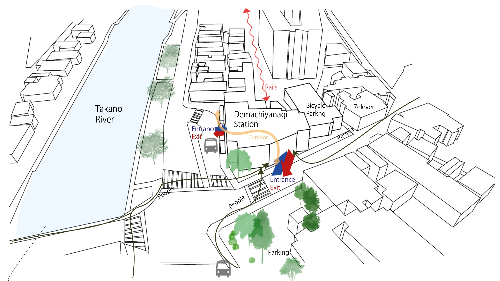
Site map — people flow diagram
Transit spaces are created based on efficiency and therefore, movement takes priority over experience. And when you mix these two factors together it can create major issues. In the case of the current Demachi Yanagi Station, the space treats users as movables to be processed instead of treating them as people with time, attention and somewhere they would actually like to be. Three specific failures describe the issues associated with the space: no reasonable cause to slow down or pause, separation between the underground and above ground levels which causes disorientation without clear spatial logic. And the four user groups use the space without a single opportunity for meeting.
Three specific failures define the space: the station offers almost no reason to slow down or pause; the split between underground and above-ground levels creates disorientation without clear spatial logic; and the four user groups who share the space — commuters, students, locals, and tourists — move in parallel without any designed opportunity to meet.
Who Uses This Space
The Commuter
Knows the station well. Moves through it every day on autopilot. Values efficiency above everything. Has no reason to stop — unless something in the space gives them one.
The Student
Uses the station as a waypoint between campus, the river path, and home. Often has a few minutes to spare. Open to a seat, a view, or an unexpected pause. Sensitive to atmosphere over function.
The Local
Uses the station daily without always taking a train. Locks their bicycle here, takes a shortcut through, buys coffee on the way home. Their relationship to the space is habitual, territorial, and deeply personal.
The Tourist
Arrives by Keihan from Gion or Fushimi, transfers to Eizan to reach Kurama or Kibune. Carries a map, moves slowly, looks up. Needs clear wayfinding, a moment to orient, and a spatial experience that already feels like Kyoto before the train even departs.
User Journey Map
How four people experience the same space
"I didn't know I needed this."
"This is the best spot in Kyoto."
"This is our neighbourhood, not just a station."
"The journey started here."
A station is not just a transport node — it is one of the most human spaces in a city. People arrive, depart, wait, meet, get lost, and find their way. The design should respond to all of that.
Design Response
Demachi Yanagi Station proposes a new uppermost layer of a publicly accessible roof top - a platform above the station concourse. Accessible via a large staircase that appears clearly visible from street level. This isn't simply a roof. It's a designed destination. The spatial logic behind the project follows three goals. First, pause over passage: the roof provides a reason for passengers to stop. The framed views of the Kamo River and the Takano River provide sheltered seating and open areas for socializing. Second, clarity: the roof structure visible from all directions serves as an orientational device connecting the multiple levels within the station. Third, threshold: the staircase transitioning from street to roof offers a gradual shift from movement to rest and from transit to place.
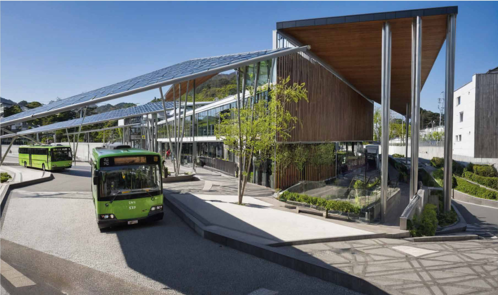
Daytime exterior render
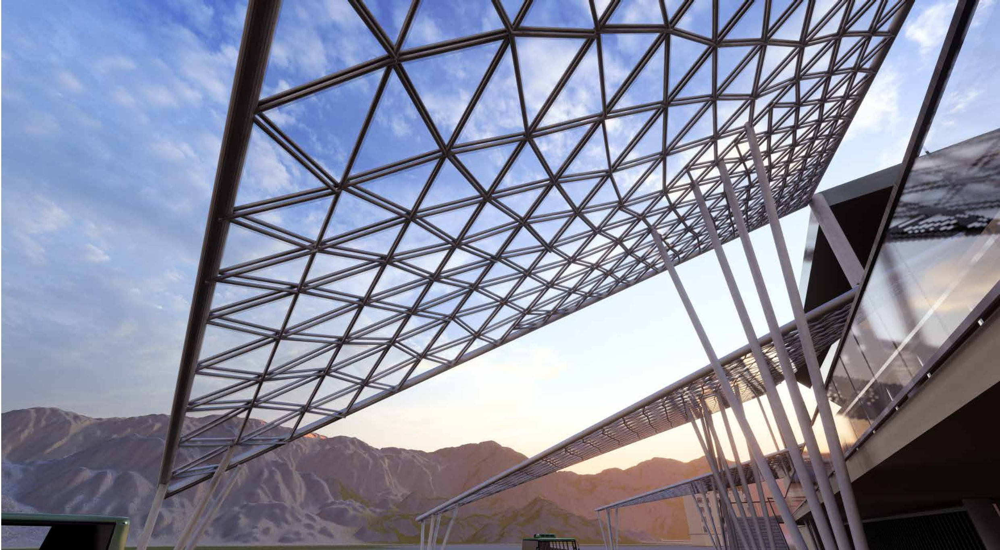
Upward lattice render
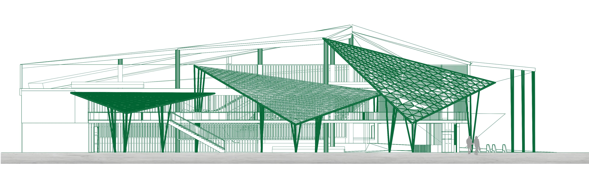
Elevation — street-level view of the rooftop intervention
The Roof System
The roof represents the central structural and conceptual idea in this project. The roofing consists of a W-structure supporting a canopy of fractal shade panels - triangle-based modules taken directly from the geometry of the willow leaf that named the area. The panels respond to changes in sunlight and temperature through automatic expansion and contraction of openings during the course of each day. The form originated in Mandelbrot's fractal geometry definition: a pattern or shape that looks the same at every scale. As leaves of willows appear to look similar whether viewed close-up or far away, each of the panels subdivide into smaller replicas of themselves, thereby generating surfaces that are structurally stiff yet visually lightweight. Underneath the canopy there is constant shifting of light. The Demachi Yanagi Station appears entirely different at 8am and 4pm.
How the Roof Works
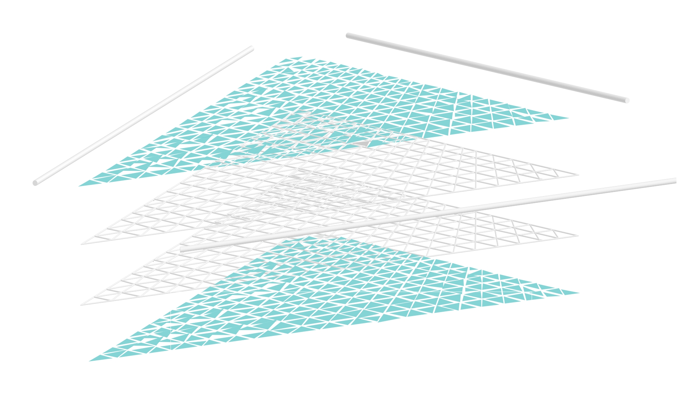
Fractal panel system — exploded axonometric showing layered roof geometry
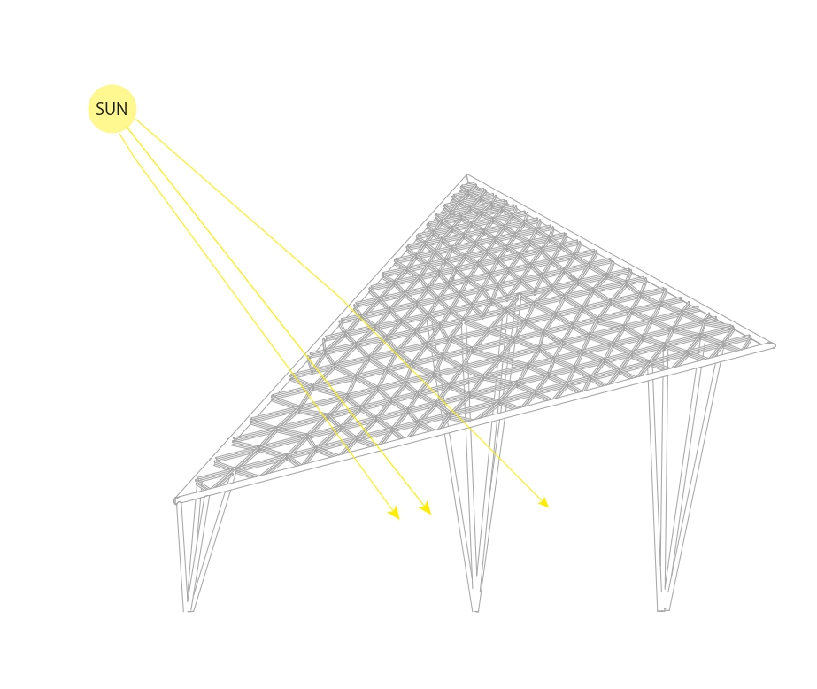
Winter — panels open, maximum light on platform
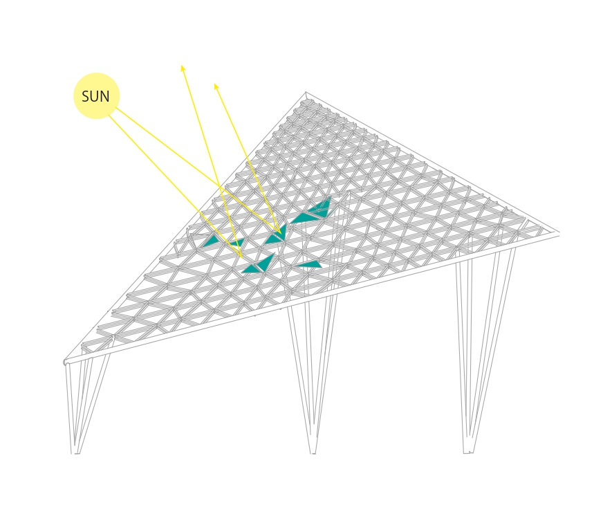
Summer — panels tilt, casting shade below
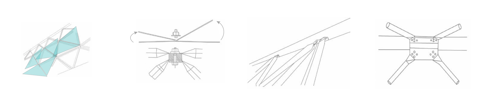
W-truss connection node — structural detail
From Willow to Structure
The willow leaf as structural and formal origin
The name Demachi Yanagi translates to Willows of Demachi. The fractal geometry used in designing the roof is essentially an exact replica of the willow leaf: identical patterns repeated at every scale, producing forms that are aesthetically light and organic while also being structurally stable.
Spatial Layers
Station programme — three vertical layers
The project uses three vertically defined spatial layers. At grade level, the existing station flow remains intact and efficient and for the most part remains unmodified. An intermediate landing is placed roughly halfway up in elevation from street level. This becomes the first pause point - room for lingering, sufficient openness for viewing across the entire station, and adequate shading to generate a feeling of shelter. The rooftop is the third layer and is intended to be the primary destination. Both rivers can be seen from here. The city extends northward toward the mountains. The fractal canopy shades overhead and the trains run underneath. The roof is public space in the purest sense of the term - it is available to any individual who climbs up the stairs.
Process
The design evolved out of site observations, people flow diagrams, and iterations of physical modeling. Site visits were conducted to observe how users actually moved through the station: where did users pause, where did they accelerate, where did users appear confused. Flow diagrams illustrated gaps in circulation: unused corners, overlooked views, divided levels. The initial roof design was abandoned due to its failure to solve the correct problem. Initial studies of early canopy designs were perceived as monumentally scaled as opposed to humanly scaled and overwhelmed the station as opposed to complementing it. Physical models were utilized to test the structural integrity of the W-truss and fractal panel system at the scale of 1:50. With each iteration adjustments were made to density of canopy material, geometry of stairways and relationship between the edge of rooftop perimeter wall and surrounding streets. The design development proceeded rapidly through quick cycles among sketch, model, and section drawings, developing tighter relationships between structural ambitions and spatial experiences.
The first roof design was abandoned because it solved the wrong problem.
Early roof studies — exploring canopy geometry at massing scale. These iterations were set aside: the form read as monumental rather than human, overwhelming the station rather than completing it.
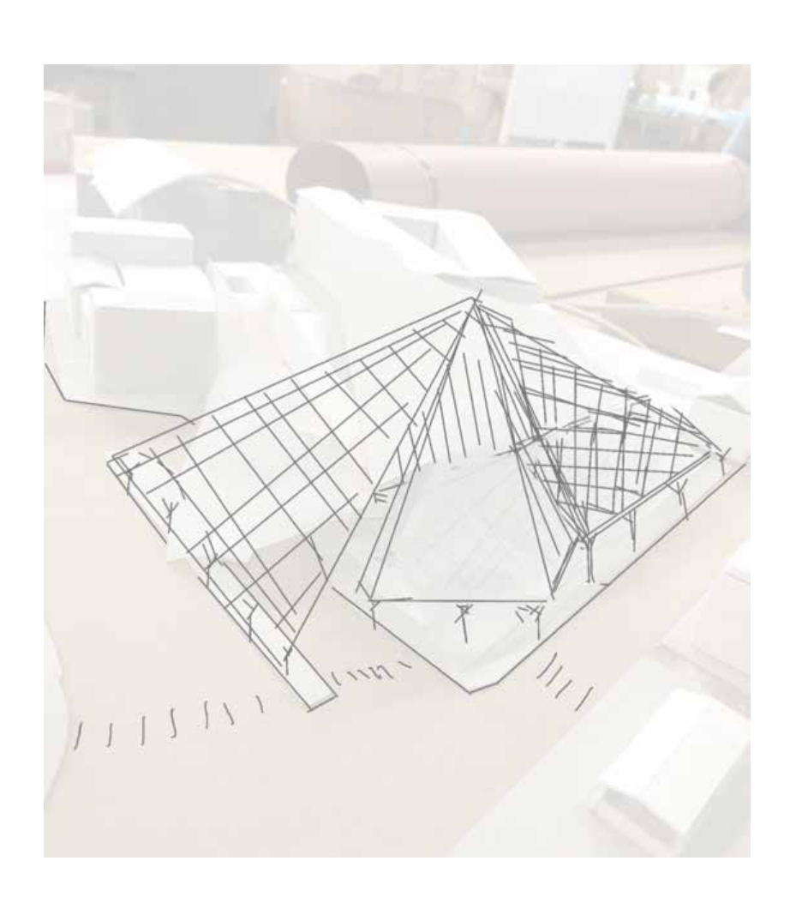
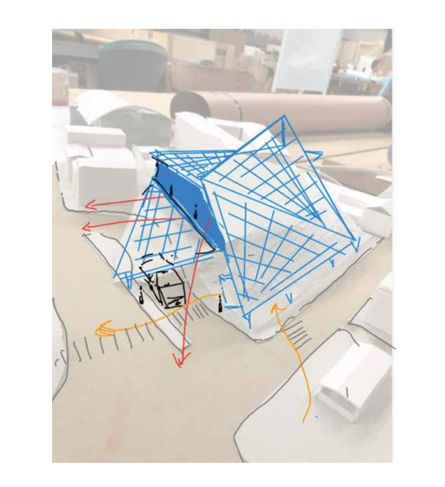
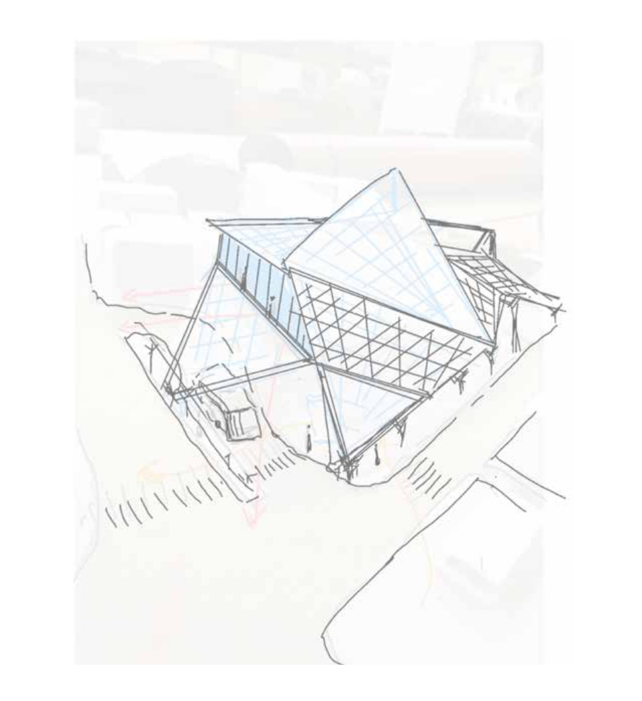
Physical models tested the structural logic of the W-truss and the fractal panel system at 1:50. Each iteration adjusted the canopy density, the stair geometry, and the relationship between the rooftop edge and the surrounding streets. The process moved between sketch, model, and section drawing in fast cycles, each one tightening the connection between structural ambition and spatial experience.
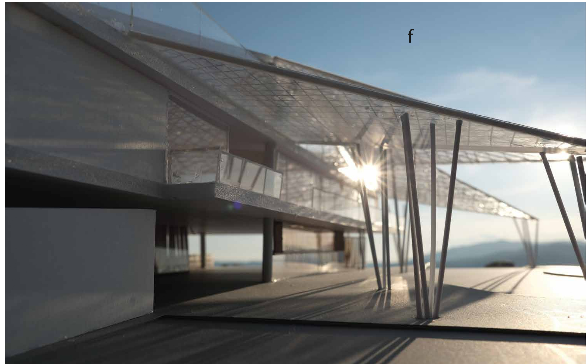
Physical model sun flare
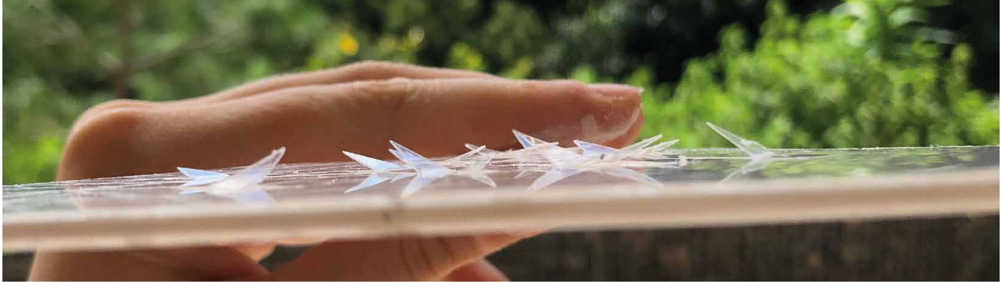
Fractal panel detail
Reflection
This project taught me that transit spaces have always been UX problems - they've simply never been labeled that way. Transit users lose their way, feel hurried or remain invisible. Not due to personal failing, but due to lack of options provided by the space. The act of designing the roof represented my understanding that architecture and interaction design ask fundamentally the same questions: What is this person experiencing right now? And what does this environmental setting do to support that experience? Commuters who may only get to view a river from a rooftop for 30 seconds have experienced a different day. That's what design does. How do we create environments that support the complete gamut of human experiences - not just the most efficient version of themselves? This question drove me from architecture to interaction design.